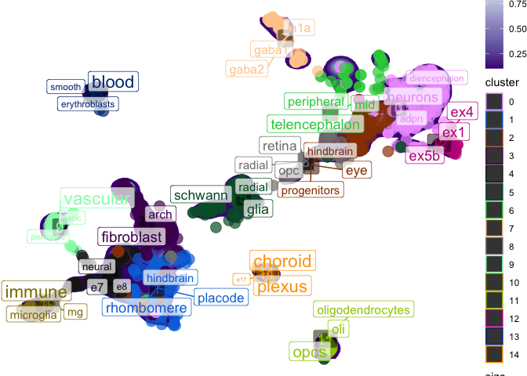

Intro
When trying to re-analyze single-cell [RNA-seq] data that has previously been annotated, the same cell-types are not usually labeled in the same way (e.g. “Purkinje cells” vs. “purkinje neurons” vs. “pkj_neurons”). This makes harmonizing data across multiple source quite challenging. One solution is to re-annotate all cells yourself. Alternatively, you can re-use the existing cell-type labels with natural language processing (NLP).
Term frequency–inverse document frequency (tf-idf) is an NLP technique to identify words or phrases that are enriched in one document relative to some other larger set of documents.
In our case, our words are within the non-standardized cell labels and our “documents” are the clusters. The goals is to find words that are enriched in each cluster relative to all the other clusters. This can be thought of as an NLP equivalent of finding gene markers for each cluster.
Another use case is to identify whether certain metadata attributes (e.g. dataset, species, brain region) are over-represented in some clusters relative to others This is a quantitative way to assess whether, for example, two or more datasets have successfully been integrated (i.e. are well-“mixed”), or whether some clusters are more representative of a particular anatomical region.
Quick examples
td-idf annotation
seurat_tfidf will run tf-idf on each cluster and put the results in the enriched_words and tf_idf cols of the meta.data.
pseudo_seurat <- run_tfidf(obj = pseudo_seurat,
reduction = "UMAP",
cluster_var = "cluster",
label_var = "celltype") ## Extracting obsm from Seurat: umap
## + Dropping 2 conflicting obs variables: UMAP.1, UMAP.2
## Loading required namespace: tidytext
## Setting cell metadata (obs) in obj.
head(pseudo_seurat@meta.data)## cluster batch species dataset celltype label
## human.DRONC_human.ASC1 5 DRONC_human human DRONC_human ASC1 ASC1
## human.DRONC_human.ASC2 5 DRONC_human human DRONC_human ASC2 ASC2
## human.DRONC_human.END 9 DRONC_mouse mouse DRONC_mouse END END
## human.DRONC_human.exCA1 0 DRONC_human human DRONC_human exCA1 exCA1
## human.DRONC_human.exCA3 0 DRONC_human human DRONC_human exCA3 exCA3
## human.DRONC_human.exDG 0 DRONC_human human DRONC_human exDG exDG
## nCount_RNA nFeature_RNA RNA_snn_res.0.8 seurat_clusters
## human.DRONC_human.ASC1 756.6266 1693 5 5
## human.DRONC_human.ASC2 766.3392 1603 5 5
## human.DRONC_human.END 885.2824 1645 9 9
## human.DRONC_human.exCA1 714.6469 1677 0 0
## human.DRONC_human.exCA3 634.1760 1657 0 0
## human.DRONC_human.exDG 659.2845 1700 0 0
## UMAP_1 UMAP_2 enriched_words
## human.DRONC_human.ASC1 -0.4796632 0.17629431 glia; schwann; radial
## human.DRONC_human.ASC2 -0.6386602 -0.05231967 glia; schwann; radial
## human.DRONC_human.END -7.7066403 -1.84134831 vascular; peric; pericytes
## human.DRONC_human.exCA1 6.2326443 1.51104526 lpn; adpn; neuron
## human.DRONC_human.exCA3 6.0303471 1.47096417 lpn; adpn; neuron
## human.DRONC_human.exDG 5.9316036 1.49563257 lpn; adpn; neuron
## tf_idf
## human.DRONC_human.ASC1 0.198360552120631; 0.181900967132288; 0.111766521696813
## human.DRONC_human.ASC2 0.198360552120631; 0.181900967132288; 0.111766521696813
## human.DRONC_human.END 0.528096815017439; 0.042313284392222
## human.DRONC_human.exCA1 0.0527542246967963; 0.0523351433907082; 0.0428030761818744
## human.DRONC_human.exCA3 0.0527542246967963; 0.0523351433907082; 0.0428030761818744
## human.DRONC_human.exDG 0.0527542246967963; 0.0523351433907082; 0.0428030761818744td-idf scatter plot
You can also plot the results in reduced dimensional space (e.g. UMAP). plot_tfidf() will produce a list with three items.
-
data: The processed data used to create the plot. -
tfidf_df: The full per-cluster TF-IDF enrichment results. -
plot: Theggplot.
Seurat input
res <- plot_tfidf(obj = pseudo_seurat,
label_var = "celltype",
cluster_var = "cluster",
show_plot = TRUE)## Extracting obsm from Seurat: umap
## + Dropping 2 conflicting obs variables: UMAP_1, UMAP_2
## Setting cell metadata (obs) in obj.
## Warning:
[1m
[22m`aes_string()` was deprecated in ggplot2 3.0.0.
##
[36mℹ
[39m Please use tidy evaluation idioms with `aes()`.
##
[36mℹ
[39m See also `vignette("ggplot2-in-packages")` for more information.
##
[36mℹ
[39m The deprecated feature was likely used in the
[34mscNLP
[39m package.
## Please report the issue at
[3m
[34m<https://github.com/neurogenomics/scNLP/issues>
[39m
[23m.
##
[90mThis warning is displayed once per session.
[39m
##
[90mCall `lifecycle::last_lifecycle_warnings()` to see where this warning was
[39m
##
[90mgenerated.
[39m
## Warning in ggplot2::geom_point(ggplot2::aes_string(color = color_var, size =
## size_var, :
[1m
[22mIgnoring unknown aesthetics:
[32mlabel
[39m
## Warning:
[1m
[22mUsing `size` aesthetic for lines was deprecated in ggplot2 3.4.0.
##
[36mℹ
[39m Please use `linewidth` instead.
##
[36mℹ
[39m The deprecated feature was likely used in the
[34mscNLP
[39m package.
## Please report the issue at
[3m
[34m<https://github.com/neurogenomics/scNLP/issues>
[39m
[23m.
##
[90mThis warning is displayed once per session.
[39m
##
[90mCall `lifecycle::last_lifecycle_warnings()` to see where this warning was
[39m
##
[90mgenerated.
[39m
Session Info
utils::sessionInfo()## R Under development (unstable) (2026-01-22 r89323)
## Platform: x86_64-pc-linux-gnu
## Running under: Ubuntu 24.04.3 LTS
##
## Matrix products: default
## BLAS: /usr/lib/x86_64-linux-gnu/openblas-pthread/libblas.so.3
## LAPACK: /usr/lib/x86_64-linux-gnu/openblas-pthread/libopenblasp-r0.3.26.so; LAPACK version 3.12.0
##
## locale:
## [1] LC_CTYPE=en_US.UTF-8 LC_NUMERIC=C
## [3] LC_TIME=en_US.UTF-8 LC_COLLATE=en_US.UTF-8
## [5] LC_MONETARY=en_US.UTF-8 LC_MESSAGES=en_US.UTF-8
## [7] LC_PAPER=en_US.UTF-8 LC_NAME=C
## [9] LC_ADDRESS=C LC_TELEPHONE=C
## [11] LC_MEASUREMENT=en_US.UTF-8 LC_IDENTIFICATION=C
##
## time zone: UTC
## tzcode source: system (glibc)
##
## attached base packages:
## [1] stats graphics grDevices utils datasets methods base
##
## other attached packages:
## [1] scNLP_0.99.0 rmarkdown_2.30
##
## loaded via a namespace (and not attached):
## [1] RColorBrewer_1.1-3 dlstats_0.1.7 jsonlite_2.0.0
## [4] magrittr_2.0.4 spatstat.utils_3.2-1 farver_2.1.2
## [7] fs_1.6.6 vctrs_0.7.1 ROCR_1.0-12
## [10] spatstat.explore_3.7-0 htmltools_0.5.9 rworkflows_1.0.8
## [13] janeaustenr_1.0.0 sctransform_0.4.3 parallelly_1.46.1
## [16] KernSmooth_2.23-26 tokenizers_0.3.0 htmlwidgets_1.6.4
## [19] desc_1.4.3 ica_1.0-3 plyr_1.8.9
## [22] plotly_4.12.0 zoo_1.8-15 igraph_2.2.1
## [25] mime_0.13 lifecycle_1.0.5 pkgconfig_2.0.3
## [28] Matrix_1.7-4 R6_2.6.1 fastmap_1.2.0
## [31] fitdistrplus_1.2-6 future_1.69.0 shiny_1.12.1
## [34] digest_0.6.39 tidytext_0.4.3 colorspace_2.1-2
## [37] patchwork_1.3.2 rprojroot_2.1.1 Seurat_5.4.0
## [40] tensor_1.5.1 RSpectra_0.16-2 irlba_2.3.5.1
## [43] SnowballC_0.7.1 labeling_0.4.3 progressr_0.18.0
## [46] spatstat.sparse_3.1-0 httr_1.4.7 polyclip_1.10-7
## [49] abind_1.4-8 compiler_4.6.0 here_1.0.2
## [52] withr_3.0.2 S7_0.2.1 fastDummies_1.7.5
## [55] maps_3.4.3 MASS_7.3-65 rappdirs_0.3.4
## [58] tools_4.6.0 lmtest_0.9-40 otel_0.2.0
## [61] httpuv_1.6.16 future.apply_1.20.1 goftest_1.2-3
## [64] glue_1.8.0 nlme_3.1-168 promises_1.5.0
## [67] grid_4.6.0 Rtsne_0.17 cluster_2.1.8.1
## [70] reshape2_1.4.5 generics_0.1.4 isoband_0.3.0
## [73] gtable_0.3.6 spatstat.data_3.1-9 tidyr_1.3.2
## [76] data.table_1.18.0 sp_2.2-0 spatstat.geom_3.7-0
## [79] RcppAnnoy_0.0.23 ggrepel_0.9.6 RANN_2.6.2
## [82] pillar_1.11.1 stringr_1.6.0 pals_1.10
## [85] yulab.utils_0.2.3 spam_2.11-3 RcppHNSW_0.6.0
## [88] later_1.4.5 splines_4.6.0 dplyr_1.1.4
## [91] lattice_0.22-7 renv_1.1.6 survival_3.8-6
## [94] deldir_2.0-4 tidyselect_1.2.1 rvcheck_0.2.1
## [97] badger_0.2.5 miniUI_0.1.2 pbapply_1.7-4
## [100] knitr_1.51 gridExtra_2.3 scattermore_1.2
## [103] xfun_0.56 matrixStats_1.5.0 stringi_1.8.7
## [106] lazyeval_0.2.2 yaml_2.3.12 evaluate_1.0.5
## [109] codetools_0.2-20 tibble_3.3.1 BiocManager_1.30.27
## [112] cli_3.6.5 uwot_0.2.4 xtable_1.8-4
## [115] reticulate_1.44.1 dichromat_2.0-0.1 Rcpp_1.1.1
## [118] globals_0.18.0 spatstat.random_3.4-4 mapproj_1.2.12
## [121] png_0.1-8 spatstat.univar_3.1-6 parallel_4.6.0
## [124] ggplot2_4.0.1 dotCall64_1.2 listenv_0.10.0
## [127] viridisLite_0.4.2 scales_1.4.0 ggridges_0.5.7
## [130] SeuratObject_5.3.0 purrr_1.2.1 rlang_1.1.7
## [133] cowplot_1.2.0